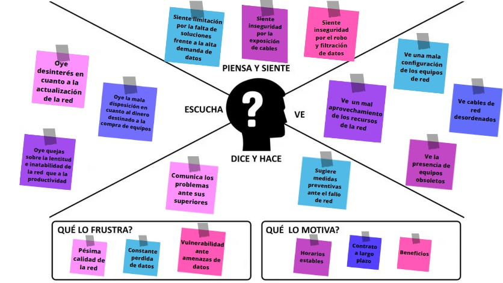
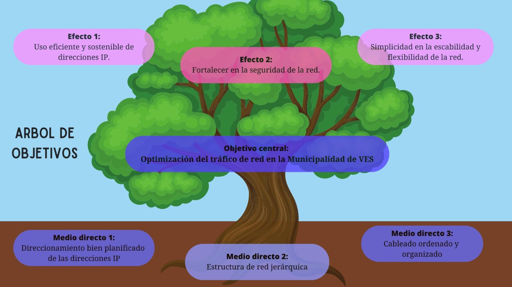

Mapa de Empatía
Árbol de problemas
Árbol de objetivos
Diagrama de problemas
Diagrama de objetivos
VOLVER
Mapa de empatía

Árbol de problemas
Árbol de objetivos

Diagrama de problemas
Diagrama de objetivos